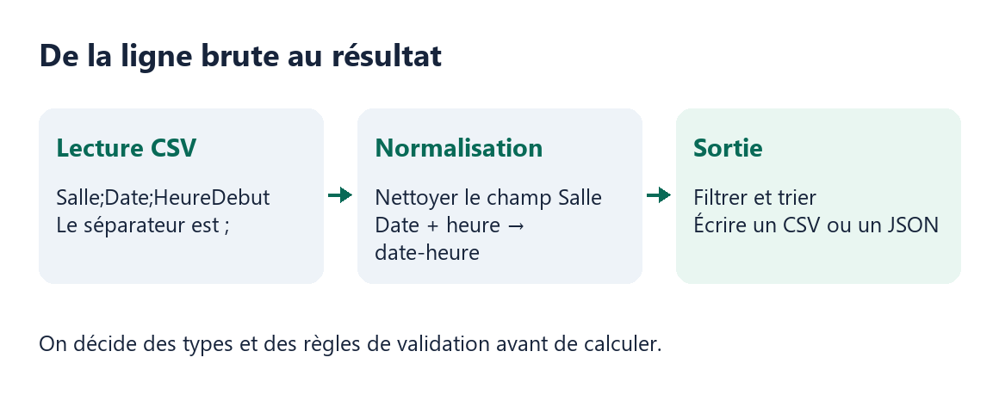

Comprendre le cours
Lire un CSV sans casser les lignes
En Python, csv.DictReader(f, delimiter=";") donne une correspondance entre les en-têtes et les valeurs de la ligne. Ouvre le fichier texte avec le bon encodage et newline="". Avec pandas, précise par exemple pd.read_csv(f, sep=";").
Vérifie les champs attendus avant de parcourir les lignes. Un identifiant ou un code postal peut nécessiter un type chaîne pour garder les zéros initiaux. Un champ manquant mérite un traitement explicite.

Lire des structures imbriquées en JSON et XML
json.load(f) lit un document JSON. Si le résultat est un dictionnaire avec la clé "salles", parcourir ce dictionnaire directement donne les clés. Pour obtenir les salles, parcours document["salles"].
Pour un document XML local de TP, ElementTree.parse(f).getroot() donne la racine. Sélectionne les éléments par chemin, récupère les attributs avec element.get("id") et le texte d’un sous-élément avec findtext(). Un espace de noms doit être déclaré dans les chemins de recherche.
Nettoyer, valider et contrôler une transformation
Nettoie les espaces avec strip() avant une comparaison d’identifiants. Verrouille le format d’une date connue avec datetime.strptime(s, "%d/%m/%Y %H:%M") pour éviter les ambiguïtés de jour et de mois.
Pour un identifiant de salle de la forme une majuscule puis un ou deux chiffres, teste re.fullmatch(r"[A-Z][0-9]{1,2}", code). Cette règle d’exemple doit évoluer si le fichier accepte des noms composés.
Sigles et acronymes
- CSV · Comma-Separated Values
- Fichier texte de données tabulaires.
Exemple. Un fichier de calendrier peut séparer les colonnes Salle et Heure par un point-virgule. - JSON · JavaScript Object Notation
- Format texte de données structurées.
Exemple. Une API renvoie un utilisateur sous la forme d’un objet avec nom et identifiant. - UTF-8 · Unicode Transformation Format, 8-bit
- Encodage Unicode à longueur variable.
Exemple. En UTF-8, le fichier garde correctement les accents. - XML · Extensible Markup Language
- Format de données structuré par des balises.
Exemple. Un inventaire XML peut décrire une salle et sa capacité.
Du cours aux TD et TP
Le cas CSV vient du projet de calendrier retrouvé dans le dossier de programmation. Les exemples JSON et XML sont des compléments. Le sujet original séparé n’a pas été retrouvé.
Questions TD & TP
Projet CSV · Filtrer les événements d’une salle et valider les heures
Énoncé reformulé. Lire le CSV du projet, garder les événements de la salle demandée et fournir une liste de couples début et fin pour la recherche de disponibilités.
- Contrôle l’en-tête et charge avec le séparateur
;. Appliquestrip()à la saisie et à la colonne Salle avant la comparaison. - Compose les heures complètes avec Date, HeureDebut et HeureFin. Convertis les chaînes à l’aide du format réellement observé. Rejette les heures illisibles et les fins inférieures ou égales aux débuts pour des événements censés rester dans la journée.
- Teste sur quelques lignes fictives. Trie par début, compare le nombre d’événements retenus puis vérifie que les mêmes entrées alimentent le test de recouvrement de la SAÉ 1.05.
Convertir un petit inventaire XML en JSON
Exemple d’entraînement. Un fichier XML contient des éléments salle, chacun muni d’un identifiant et d’un élément capacite. Produire un JSON avec un objet par salle.
- Parcours les éléments
salleet lis l’identifiant avecget("id"). Lisfindtext("capacite")et convertis uniquement les nombres valides. - Construis une liste de dictionnaires avec
idetcapacite. Écris-la en UTF-8 avecjson.dump(resultat, f, ensure_ascii=False, indent=2). - Relis le fichier, contrôle le nombre de salles et le type entier de la capacité. Essaie ensuite un document avec un champ absent pour vérifier ton traitement des erreurs.